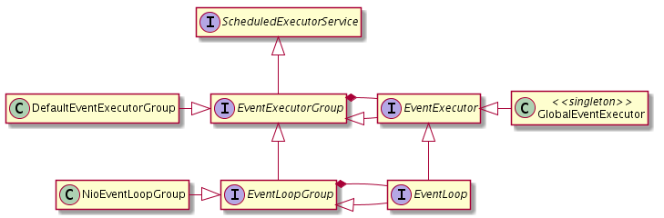
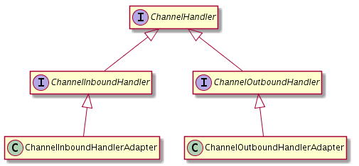
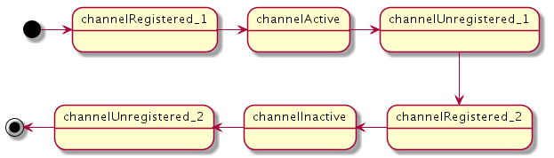

目录 [−]
- 项目结构的改变
- 通用 API 的改变
- Buffer API 的改变
- io.netty.util.concurrent
- Channel API 的改变
- 良好定义的线程模型
- 编解码框架的改变
- 用例学习：迁移阶乘（Factorial）的例子
本文翻译自官方文档New and noteworthy in 4.0，
本文带你了解Netty 4.0的值得注意的改变和新特性，帮助你将应用程序从老的Netty迁移到最新的版本上。
项目结构的改变
Netty的包名从 org.jboss.netty 改成 io.netty， 因为 我们不再是JBoss.org的一份子了.
二进制的 JAR 文件被分成多个模块， 这样用户可以从类路径中排除不需要的特性. 当前的结构如下:
| Artifact ID | Description |
|---|---|
netty-parent |
Maven parent POM |
netty-common |
Utility classes and logging facade |
netty-buffer |
ByteBuf API that replaces java.nio.ByteBuffer |
netty-transport |
Channel API and core transports |
netty-transport-rxtx |
Rxtx transport |
netty-transport-sctp |
SCTP transport |
netty-transport-udt |
UDT transport |
netty-handler |
Useful ChannelHandler implementations |
netty-codec |
Codec framework that helps write an encoder and a decoder |
netty-codec-http |
Codecs related with HTTP, Web Sockets, SPDY, and RTSP |
netty-codec-socks |
Codecs related with SOCKS protocol |
netty-all |
All-in-one JAR that combines all artifacts above |
netty-tarball |
Tarball distribution |
netty-example |
Examples |
netty-testsuite-* |
A collection of integration tests |
netty-microbench |
Microbenchmarks |
现在所有的 artifacts (除了 netty-all.jar) 都实现了 OSGi bundle, 可以用在你的 OSGi 容器中.
通用 API 的改变
- Netty中大部分的操作都支持链式方法，简化了操作
- 不能配置的getter 不再有
get-前缀. (例如Channel.getRemoteAddress()→Channel.remoteAddress()) - 布尔属性仍然保留
is-前缀， 避免造成迷惑 (例如 'empty' 既是形容词也是动词, 所以empty()有两个意思) - 4.0 CR4 和 4.0 CR5之间的 改变请参照 Netty 4.0.0.CR5 released with new-new API
Buffer API 的改变
ChannelBuffer → ByteBuf
由于上面提到的项目结构的改变, buffer API可以作为一个独立的包使用. 即使你对使用Netty作为网络应用框架不感兴趣，你也可以使用buffer API.
因此, 类型名ChannelBuffer 不再合适了， 所以改名为 ByteBuf.
用来创建新buffer的工具类 ChannelBuffers被分成了两个工具类： Unpooled 和 ByteBufUtil. 从名字Unpooled上也能猜出, 4.0引入了池化的 ByteBuf， 可以通过 ByteBufAllocator
的具体实现来分配(allocated).
ByteBuf 不是一个接口，而是一个抽象类class
根据我们内部的性能测试，将ByteBuf 从接口改为抽象类可以给总吞吐量带来5%的提升.
大部分的buffer变成了动态的，具有可配置的最大容量
在3.x, buffer可以是固定大小或者动态的，固定大小的buffer一旦创建容量就不能改变。 而动态buffer的容量在write*(...)方法需要更多空间时可以改变。
自4.0开始， 所有的buffer都是动态的。 然而，它们要比以前的动态buffer更好。你可以更容易更安全地增加或者减少buffer的容量。因为提供了新的方法 ByteBuf.capacity(int newCapacity)所以
改变容量更容易。之所以说它安全， 是因为你可以设置一个最大容量，这样buffer就不会不限制的增长.
|
|
唯一的例外是那些使用wrappedBuffer方法包装的(wrapped)一个单一的buffer或者一个单一字节数组。你不能增加它的容量， 因为这样会使包装一个已有buffer的目的(节省内存复制)失去意义。
如果你想改变这样的buffer的容量, 你应该使用你需要的容量创建一个新的buffer， 然后将原来包装的buffer中的数据复制到这个新的buffer中.
新的buffer类型: CompositeByteBuf
一个名叫CompositeByteBuf 的buffer实现为composite buffer实现定义了多个高级操作。用户可以使用composite buffer节省大量的内存复制，只比随机访问buffer的代价大一点。
为了创建一个新的composite buffer, 可以像以前一样使用Unpooled.wrappedBuffer(...) , 也可以使用Unpooled.compositeBuffer(...), 或者 ByteBufAllocator.compositeBuffer().
可预知的NIO buffer转型
在3.x中， ChannelBuffer.toByteBuffer() 以及它的变体所提供的约定并不那么明确。用户无法确定这些方法会返回一个拥有共享数据的视图buffer还是一个拥有独立数据的通过复制得到的buffer(a view buffer with shared data or a copied buffer with separate data)。
4.0 中使用 ByteBuf.nioBufferCount(), nioBuffer(), 和 nioBuffers()代替toByteBuffer(). 如果nioBufferCount() 返回 0, 用户总是可以通过copy().nioBuffer()得到一个复制buffer.
对小端序(Little endian)支持的改变
小端序(Little endian)的支持做了很大的改变。先前用户为了得到小端序buffer,可以通过 LittleEndianHeapChannelBufferFactory 或者按指定的字节序包装一个已有的buffer:
4.0 中增加了一个新的方法: ByteBuf.order(ByteOrder)， 它返回当前buffer对象的一个具有指定字节序的视图：
|
|
池化buffer Pooled buffers
Netty 4引入了一个高性能的buffer池， 它是 jemalloc 的变种， 组合了 buddy allocation 和 slab allocation的功能. 有以下好处:
*减少了 GC 压力，因为使用unpooled buffer会带来频繁的内存分配和回收
- 减少了内存的带宽消耗(memory bandwidth consumption) 因为新的内存不可避免地要用zero填充(初始化)
- 定时回收 direct buffers
为了使用这个特性， 除非用户非要得到unpooled buffer, 他应该通过 ByteBufAllocator分配buffer:
|
|
一旦ByteBuf 被写入到远程端， 它立即自动地放回原来的buffer池中.
默认的 ByteBufAllocator 是 PooledByteBufAllocator. 如果你不想使用buffer池， 抑或你想使用自己的allocator, 使用 Channel.config().setAllocator(...) 设置可选的allocator， 比如 UnpooledByteBufAllocator.
注意: 当我们使用的默认allocator 是 UnpooledByteBufAllocator时， 一旦我们确保PooledByteBufAllocator没有内存泄漏的问题, 我们应该将默认的allocator换回PooledByteBufAllocator.
ByteBuf 总是使用引用计数(reference counted)
为了精确的控制ByteBuf生命周期，Netty不再依赖垃圾回收器，而是使用一个显示的引用计数器. 基本规则如下:
- 当 buffer 首次分配时, 它的初始引用计数为 1.
- 当buffer的引用计数降为0时，它被回收或者放回原始的buffer池中.
- 下面的动作会触发
IllegalReferenceCountException异常:- 访问引用计数为0的buffer,
- 将引用计数降少为负数,
- 或者将引用计数的值超过
Integer.MAX_VALUE.
- 衍生的buffers (比如 slices 和 duplicates) 和 交换的buffers (比如 little endian buffers) 和原buffer共享同一个引用计数器. 注意，当一个衍生的buffer创建时它的引用计数器不会改变.
当 ByteBuf 在 ChannelPipeline中使用时,你需要注意一些额外的规则:
- 管道中的每个 inbound (a.k.a. upstream) handler 必须release接收到的消息. Netty不会自动release 它们.
- 注意 codec 框架的确自动 release消息， 用户如果想传递一个as-is message给下一个handler, 就不得不增加引用计数器 .
- 当outbound (a.k.a. downstream) message 到达了管道的开始位置时，Netty会在写完它后 release it.
自动 buffer泄漏检查
尽管引用计数很强大，但却容易出错。为了帮助用户找到他们忘记release buffer的地方, 泄漏检查器会自动地将那些泄漏buffer分配时的堆栈信息输出到日志中.
因为泄漏检查器(leak detector)依靠PhantomReference 并且获取堆栈信息是一个花费很大的操作， 它只会采样大约1%的分配. 因此，最好运行应用程序相当长的时间来找到所有可能的泄漏是一个好主意.
只要所有的泄漏否被发现和修改， 你就可以将这个特性关闭， 通过-Dio.netty.noResourceLeakDetection JVM 参数. （译者: jinfo可以运行时修改jvm参数，但是不是所有的参数都能被它修改）
io.netty.util.concurrent
除了 buffer API, 4.0还提供了写异步应用程序的一些通用的类，它们被放入包 io.netty.util.concurrent. 一些类如:
Future和Promise- 类似ChannelFuture, 但是不依赖ChannelEventExecutor和EventExecutorGroup- 通用的 event loop API
它们是channel API基础，文章后面会有解释. 例如, ChannelFuture 扩展 io.netty.util.concurrent.Future 而 EventLoopGroup 扩展 EventExecutorGroup.

Channel API 的改变
在4.0中, 很多 io.netty.channel 包下的类都经历了大的整理 所以简单的文本搜索-替换不会将老的Netty 3.x 应用轻松迁移到 4.0.
这一节将尽量介绍这么大的变化背后的考量，而不是罗列所有的变化.
改组 ChannelHandler 接口
Upstream → Inbound, Downstream → Outbound
术语 'upstream' 和 'downstream' 对新人来讲很让人困惑。 4.0 使用 'inbound' 和 'outbound' .
新的 ChannelHandler 类型继承关系
在3.x 中, ChannelHandler 只是一个 tag interface, 而 ChannelUpstreamHandler, ChannelDownstreamHandler, 和 LifeCycleAwareChannelHandler 定义了实际的 handler 方法.
在Netty 4中, ChannelHandler 合并了 LifeCycleAwareChannelHandler 连同许多新方法， 它们对inbound 和 outbound handler 很有用:
|
|
下图描绘了新的类型继承关系:

ChannelHandler 不需要 event object
在3.x中, 每个 I/O 操作都会创建安一个 ChannelEvent 对象. 对于每一次 read / write, 它都额外的创建一个新的 ChannelBuffer.
它极大地简化了Netty的内部处理，因为它代理了JVM的资源管理和buffer池.
然而，这经常也是Netty应用程序在高负载的情况下GC压力大的原因.
4.0完全移除了event object， 取而代之的是强类型的方法调用. 3.x 包含处理所有事件的handler method如 handleUpstream() 和 handleDownstream(), 但Netty 4.0中 每个 event 类型都有它自己的handler method:
|
|
ChannelHandlerContext 也根据上面改变而改变了:
|
|
所有这些改变意味着用户无法扩展一个不存在的 ChannelEvent 接口了. 然而用户怎么定义他自己的事件类型呢，比如 IdleStateEvent?
4.0的ChannelInboundHandler 有一个 userEventTriggered() handler method,可以用来处理这样的需求.
简化channel 状态模型
在3.x中，当一个新的Channel被创建并连接成功，至少三个ChannelStateEvent会被触发：channelOpen、channelBound以及channelConnected.当一个Channel关闭时，也至少有三个事件会被触发：channelDisconnected、channelUnbound以及channelClosed.
但是，触发这么多事件的意义并不那么大。更有用的是当一个Channel进入可读或可写的状态时通知用户。
channelOpen, channelBound, 和 channelConnected 被合并到 channelActive. channelDisconnected, channelUnbound, 和 channelClosed 被合并到 channelInactive.
同样 Channel.isBound() 和 isConnected() 也被合并为isActive().
需要注意的是，channelRegistered and channelUnregistered 这两个事件与channelOpen and channelClosed并不等价。它们是在支持Channel的动态注册、注销以及再注册时被引入的新的状态，就像下图所示：

write() 不会自动 flush
4.0 引入了新的操作 flush() 它可以显示地将Channel输出缓存输出. write()操作并不会自动 flush. 你可以把它想象成java.io.BufferedOutputStream, 除了 它工作于消息级这一点.
由于这个改变, 你必须万分小心，写入数据后不要忘了调用 ctx.flush() . 当然你也可以使用一个更直接的方法 writeAndFlush().
可知的和不易出错的入站流量挂起(暂停读取)
(Sensible and less error-prone inbound traffic suspension)
3.x有一个由Channel.setReadable(boolean)提供的不是很明显的入站流量挂起机制。它在ChannelHandler之间带来了复杂的交互操作，同时handler由于不正确实现很容易互相干扰。
4.0里，增加了一个新的名为read() 的outbound操作。如果你使用Channel.config().setAutoRead(false)来关闭默认的auto-read标志，Netty不会读入任何东西，直到你显式地调用read()操作.
一旦你启动的read() 操作完成，同时channel再次停止读，一个名为channelReadSuspended()的inbound事件会被触发， 这样你就能够重新启动另一次的read() 操作。你同样也可以拦截read() 操作来执行更多高级的流量控制。
暂停接受新的的连接
Netty 3.0 中用户没有办法停止接受新的连接， 除非使用阻塞的I/O线程或者关闭server socket. 4.0中 当auto-read没有设置时 read() 操作就像一个原始的channel.
半关闭的socket
TCP和SCTP允许用户关闭一个socket的outbound流量而不用完全关闭它。这样的socket被称为"半关闭的socket",用户能够通过调用SocketChannel.shutdownOutput()方法来获取一个半关闭socket。如果一个远端关闭了outbound流量，SocketChannel.read(..)会返回-1，这看上去并没有和一个关闭了的连接有什么区别。
3.x没有 shutdownOutput() 操作。它总是在 SocketChannel.read(..) 返回-1的时候关闭连接。为了支持半关闭socket，4.0增加了SocketChannel.shutdownOutput() 方法，同时用户能设置ALLOW_HALF_CLOSURE的ChannelOption 来阻止Netty在SocketChannel.read(..) 返回-1的时候自动关闭连接.
灵活的I/O线程分配
在3.x里，一个 Channel 是由ChannelFactory创建的，同时新建的 Channel 会自动注册到一个隐藏的I/O线程。4.0使用新的名为 EventLoopGroup 的接口来替换ChannelFactory ，EventLoopGroup包含一个或多个EventLoop。一个新的Channel 也不会自动注册到EventLoopGroup，但用户可以显式调用EventLoopGroup.register() 来注册。
由于这个改变（例如，分离了ChannelFactory和I/O线程），用户可以注册不同的 Channel实现到同一个EventLoopGroup，或者同一个 Channel实现到不同的EventLoopGroup。
例如，你可以运行一个NIO server socket，NIO client socket，NIO UDP socket，以及虚拟机内的本地通道在同一个I/O线程里。在编写一个需要最小延迟的代理服务器时这确实很有用。
能够从一个已存在的jdk套接字上创建一个Channel
3.x没有方法从已存在的jdk套接字（如java.nio.channels.SocketChannel. ）创建一个新的channel。4.0可以。
取消注册和重新注册一个Channel从/到一个I/O线程
3.x中一旦一个新的Channel被创建，它就完全绑定到一个单一的I/O线程上，直到它底层的socket关闭。在4.0中，用户能够从I/O线程里取消注册一个Channel来完全控制它底层jdk套接字。例如，你能够利用Netty提供的高层次非阻塞I/O的优势来解决复杂的协议，然后取消注册Channel 并且切换到阻塞模式来在可能的最大吞吐量下传输一个文件。当然，它能够再次注册已经取消了注册的Channel 。
|
|
调度任意的任务到I/O线程里运行
当一个Channel被注册到EventLoopGroup时，Channel实际上是注册到一个由EventLoopGroup管理 EventLoop中。EventLoop实现了 java.util.concurrent.ScheduledExecutorService接口。这意味着用户可以在一个用户channel归属的I/O线程里运行或调度一个任意的Runnable或Callable。使用良好设计的线程模型（稍后会介绍），编写一个线程安全的handler变得极其容易地。
|
|
简化shutdown
releaseExternalResources()不再使用。你可以通过调用EventLoopGroup.shutdownGracefully()关闭所有打开的channel同时使所有I/O线程停止.
类型安全的ChannelOption
有两种方法来配置Netty的Channel的socket参数。一种是明确地调用ChannelConfig的setter，例如SocketChannelConfig.setTcpNoDelay(true).。这是最为类型安全的方法。另外一种是调用 ChannelConfig.setOption() 方法。有时候你不得不在运行时的时候socket决定要配置什么选项，这个方法就特别适合这样的情况。然而，在3.x里它是容易出错的，因为一个用户必需用一个字符串/对象对来指定选项。如果用户调用了错误的选项名或者值，他或她将会遇到一个ClassCastException 异常或指定的选项甚至可能会默默地忽视了。
4.0引入了名为ChannelOption的新的类型，它提供了类型安全地访问socket选项。
|
|
AttributeMap
在处理用户指令里，你可以附加任意的对象到Channel和ChannelHandlerContext。一个名为AttributeMap的新接口被加入了，它被Channel和ChannelHandlerContext继承。相反，ChannelLocal和Channel.attachment被移除。这些属性会在他们关联的Channel 垃圾回收的同时回收。
|
|
新的 bootstrap API
bootstrap API已经被重写，尽管它的目的还是一样；它执行需要配置和运行服务器或客户端程序的典型步骤，通常能在样板代码里找到。
新的bootstrap同样采取了流式接口(fluent interface)。
|
|
ChannelPipelineFactory → ChannelInitializer
就像你在在上面的例子注意到的一样，ChannelPipelineFactory 不再存在了。而是由 ChannelInitializer来替换，它给予了Channel 和 ChannelPipeline 配置的更多控制。
请注意，你不能自己创建一个新的ChannelPipeline。通过观察目前为止的用例报告，Netty团队得到一个结论，让用户去创建自己的管道实现或者是继承默认的实现是没有好处的。因此，ChannelPipeline 不再让用户创建。ChannelPipeline 由 Channel自动创建。
ChannelFuture → ChannelFuture 和 ChannelPromise
ChannelFuture已经被拆分为ChannelFuture和ChannelPromise。这不仅仅是让异步操作里的生产者和消费者间的约定更明显，同样也是得在使用从链中(如filtering)返回的ChannelFuture更加安全，因为ChannelFuture的状态是不能改变的。
由于这个改变，一些方法现在都采用ChannelPromise 而不是ChannelFuture 来改变它的状态。
良好定义的线程模型
3.x中没有很好定义线程模型， 尽管3.5尝试修改它的不一致性。
4.0定义了一个严格的线程模型，可以帮助用户编写ChannelHandler， 而用户不必太担心线程安全.
- Netty 绝不会并发地调用
ChannelHandler'的方法, 除非ChannelHandler被标记为@Sharable. 这与handler方法的类型无关 - inbound, outbound, life cycle event handler method.- 用户不必同步inbound or outbound event handler方法.
- 4.0 不允许增加
ChannelHandler多次， 除非它被标记为@Sharable.
- Netty 调用的
ChannelHandler之间总是遵循 happens-before .- 用户不必定义
volatile字段来保存 handler 的状态.
- 用户不必定义
- 用户往
ChannelPipeline中增加handler时可以指定EventExecutor.- 如果指定了一个
EventExecutor,ChannelHandler的handler方法总是被这个指定的EventExecutor执行. - 如果没有指定, handler 方法总是被它的
Channel注册的EventLoop执行.
- 如果指定了一个
- 指派给handler或者channle的
EventExecutor和EventLoop总是单线程的.- handler 方法总是被同一个线程调用.
- 如果使用多线程的
EventExecutor或EventLoop, 首先会选择其中一个线程， 然后一直使用这个线程，直到取消注册（deregistration）. - 如果在同意管道pipeline中的两个handler 被指派给不同的
EventExecutor, 它们可以被并发地调用. 如果它们访问共享数据， 用户必须小心线程安全 .
- 增加到
ChannelFuture的ChannelFutureListeners总是此Channel相关的EventLoop执行.
没有 ExecutionHandler 了 - 它被放入核心代码中.
在你往ChannelPipeline增加ChannelHandler 时你可以指定一个EventExecutor, 这样管道总是使用这个EventExecutor来调用这个新增加的 ChannelHandler的handler方法.
|
|
编解码框架的改变
编码解码器框架里有实质性的内部改变, 因为4.0需要一个handler来创建和管理它的buffer（看这篇文章的 Per-handler buffer章节）然而，从用户角度来看这些变化并不大。
- 核心编解码类移入到
io.netty.handler.codec包下. FrameDecoder被重新命名为ByteToMessageDecoder.OneToOneEncoder和OneToOneDecoder被MessageToMessageEncoder和MessageToMessageDecoder取代.decode(),decodeLast(),encode()的方法签名有些许改变以便支持泛型， 也移除了一些冗余的参数.
Codec embedder → EmbeddedChannel
Codec embedder 被 io.netty.channel.embedded.EmbeddedChannel 取代， 允许用户对任何包含编码解码器的管道进行测试.
HTTP codec
HTTP 解码器现在对每个HTTP消息中总是生成多个消息对象：
|
|
如果想了解更多的细节, 请参考最新的 HttpSnoopServer 例子. 如果你不想为每个HTTP消息生成多个消息, 你可以将一个 HttpObjectAggregator 加入到管道中. HttpObjectAggregator 总是将多个消息转换成一个单一的FullHttpRequest 或者 FullHttpResponse.
transport 实现的改变
新加了下面的 transports ：
- OIO SCTP transport
- UDT transport
用例学习：迁移阶乘（Factorial）的例子
这部分粗略地展示把阶乘例子从3.0迁移到4.0的步骤。阶乘例子已经移植到4.0了，它被放在io.netty.example.factorial包里。请浏览示例的源代码来看下每一处的变化。
迁移服务端
- 使用新的bootstrap API重写
FactorialServer.run()方法.- 不再使用
ChannelFactory. 初始化一个NioEventLoopGroup(一个用来接受连接，其它的用来处理接受后的连接.
- 不再使用
- 重命名
FactorialServerPipelineFactory为FactorialServerInitializer.- 让它扩展
ChannelInitializer<Channel>. - 不创建一个
ChannelPipeline, 而是通过Channel.pipeline()得到它.
- 让它扩展
- 让
FactorialServerHandler扩展ChannelInboundHandlerAdapter.- 用
channelInactive()替换channelDisconnected(). - 不再使用handleUpstream().
- 将
messageReceived()命名为channelRead()， 并相应的调整方法签名. - 用
ctx.writeAndFlush()替换ctx.write().
- 用
- 让
BigIntegerDecoder扩展ByteToMessageDecoder<BigInteger>. - 让
NumberEncoder扩展MessageToByteEncoder<Number>.encode()不再返回一个buffer. 由ByteToMessageDecoder负责将编码的数据填入到buffer中.
迁移客户端
大部分和移植服务端差不多，但在编写一个潜在的大数据流时要注意。
- 使用新的 bootstrap API 重写
FactorialClient.run()方法. - 将
FactorialClientPipelineFactory重命名为FactorialClientInitializer. - 让
FactorialClientHandler扩展ChannelInboundHandlerAdapter